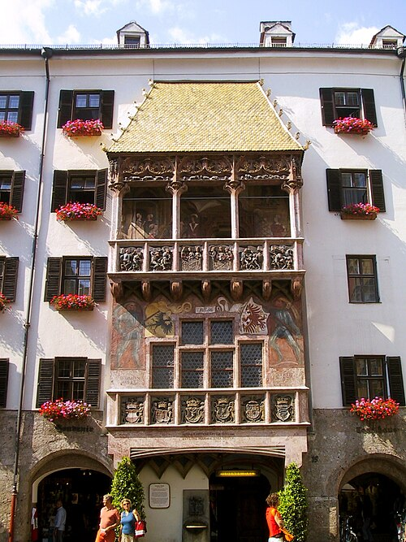
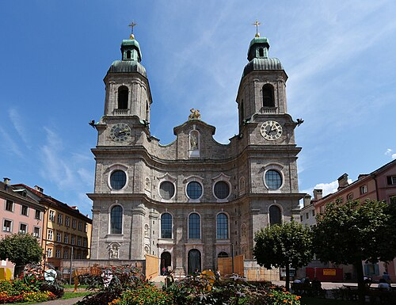
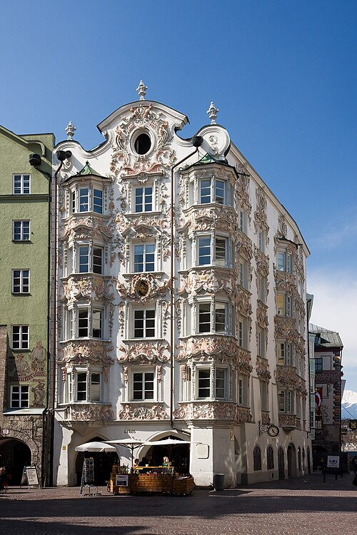

This map shows 14 of the most-searched sights in Innsbruck as photo spots, ranked by how often people search for them: Golden Roof, Nordkette Mountains, Ambras Castle, Bergisel Ski Jump and Imperial Palace lead the list. Every spot has a pin on the subject and a phone icon showing where to stand, with tips for shooting it on your phone: which lens to use, how to frame it, a settings tip and the best time of day. Directions and Navigate buttons take you to the standing point on foot or by public transport. 3 spots are free to view; the full map is for members.
The 3 free photo spots
1Golden Roof

The Golden Roof is the balcony-and-roof feature on the front of a late-medieval building in Innsbruck's Old Town, and the city's best-known symbol. It was finished in 1500 for Emperor Maximilian I, who wanted a private box from which he and his wife, Bianca Maria Sforza, could watch festivals and tournaments in the square below. The roof carries about 2,657 fire-gilded copper tiles (other counts give 2,738). The carved reliefs and painted panels you see today are careful replicas, and the originals are kept in the Ferdinandeum museum.
It photographs well because the gilded roof stands out against the soft pastel facades of the street. This is the classic postcard view. The street is narrow, so the ultra-wide lens (0.5x) helps you fit in the whole scene. For a tighter shot, step back a little and use the default lens (1x). Use a zoom lens for the carved reliefs and coats of arms on the balcony.
The street is a pedestrian zone and gets very busy around midday, so early morning or late afternoon is calmer and kinder to the light. For a second angle, try the view that fits the richly decorated Helblinghaus into the same frame as the Golden Roof.
Where it is: The Golden Roof is in Innsbruck's Old Town (Altstadt), on the square at the heart of the historic centre.
Shooting it on your phone
Lens: Start with the ultra-wide lens (0.5x) to take in the whole street, the roof and the mountains. Use the default lens (1x) for a calmer, less stretched view, and the telephoto/zoom (2x-5x, depending on your phone) for details of the balcony.
Where to stand: Stand on Herzog-Friedrich-Straße (mid-street, facing the Golden Roof). The Golden Roof centred in a frontal view, framed by pastel Old Town facades with the Nordkette mountains rising behind the rooftops. From here the roof sits in the centre of the frame, with pastel Old Town facades on either side and the Nordkette mountains rising behind the rooftops.
Framing: Switch on gridlines and put the Golden Roof on the centre line, keeping the phone level so the facades don't lean inwards. Include the colourful buildings on both sides and a strip of mountain above the rooftops. For a variation, try the view from the Helblinghaus side, which puts its decorated facade and the roof in one frame.
Settings tip: Tap on the golden roof to focus, then pull the exposure slider down a little so the gilding keeps its detail and the sky doesn't turn white. Hold the phone steady with both hands and take a few frames, so you can pick one without passers-by.
Best time: Early morning or late afternoon, to avoid harsh overhead midday sun and the busiest crowds.
10Innsbruck Cathedral

Innsbruck Cathedral, also called the Cathedral of St James, is a Baroque church in the middle of the Old Town. Its two towers and big dome stand out among the green copper roofs, which makes it easy to spot and rewarding to photograph. The curved west façade is the part that works best on a phone. It is built of Hötting breccia and Hagau marble, and its niches hold limestone statues of Tyrolean saints made between 1941 and 1960. The present building went up between 1717 and 1724 on the site of a twelfth-century Romanesque church. The Asam brothers worked on the lavish interior. The church was badly damaged in an air raid in December 1944 and restored between 1946 and 1950. It became the cathedral of the Diocese of Innsbruck in 1964. For the outside view, stand on Domplatz, the square in front. It is the easiest place to get the whole façade and both towers in one clean shot, and the square and surrounding Old Town buildings in the frame show how big the cathedral is. Keep the phone level so the towers don't lean. Step back as far as the square allows, then take a second shot closer up of the statues in their niches. Warm, low light brings out the carved detail on the stonework.
Where it is: The cathedral is in the Old Town (Altstadt) of Innsbruck, on Domplatz, where its west façade faces the square. It rises above the green copper roofs of the surrounding old buildings.
Shooting it on your phone
Lens: Start with the default lens (1x) from the square for a natural view of the façade. Switch to ultra-wide (0.5x) if the towers will not fit, and use telephoto (2x or more, depending on your phone) for the saints' statues in the niches.
Where to stand: Stand in Domplatz. The cathedral's Baroque west façade and twin towers, framed from the square with the surrounding Old Town for scale. From there the cathedral's Baroque west façade and twin towers face you, and the square and the Old Town around it show the building's scale.
Framing: Turn on gridlines and line the towers up with the vertical lines so they stay straight. Include some of the square in the lower part of the frame to give a sense of size. If you are close, tilt the phone as little as you can, or use 0.5x from further back to avoid pointing it steeply upwards. Take one wide shot and one tighter zoomed shot of the statues.
Settings tip: Tap the bright part of the sky or stonework to set focus, then drag the exposure slider down a touch so the pale façade and sky keep their detail.
Best time: Golden hour, when warm light brings out the architectural detail of the façade.
13Helbling House

Helbling House (Helblinghaus) is one of the most eye-catching façades in Innsbruck's Old Town, standing right across from the Golden Roof on Herzog-Friedrich-Straße. The building began in the fifteenth century as townhouses with an early Gothic look, and it was reworked in later centuries. The decoration you see today is frothy Rococo stucco from the early eighteenth century: bows, window frames, oriels, masks, sculptures and shells, all covering the front. The work was completed in 1732 by Anton Gigl. The house takes its name from Sebastian Helbling, who owned it from 1800 to 1827.
It photographs well because the façade is so full of detail, and because the raised stucco catches the light and gives the surface shape and shadow. Put the Golden Roof beside it and you get a picture that says Innsbruck at a glance. The best view is from the street directly opposite the house, on the side facing the Golden Roof, where the whole façade fits in one frame. The small square in front of the building also works well. For a second picture, step closer and fill the frame with the stucco angels, masks and flower ornaments. You can only look at the house from outside, so all the photography happens from the street.
Where it is: In the Old Town (Altstadt) of Innsbruck, at Herzog-Friedrich-Straße 10, directly across from the Golden Roof.
Shooting it on your phone
Lens: Start with the default lens (1x) for the full façade with the Golden Roof beside it. If the street is too narrow to fit it all, switch to the ultra-wide (0.5x), and use telephoto (2x-5x, depending on your phone) for the stucco details.
Where to stand: Stand right at the subject: the phone icon on the map marks the spot. From here, or from the opposite side of the street facing the Golden Roof, you can fit the full stucco façade of the house with the Golden Roof beside it.
Framing: Turn on the gridlines and keep the phone upright, with the vertical lines of the façade parallel to the grid so the building doesn't lean. Place the house on one side of the frame and the Golden Roof on the other. For an alternative, move closer to the house and zoom in on the stucco angels, masks and floral ornaments.
Settings tip: Tap the façade to set focus, then lower the exposure slider a little if the sky is bright, so the stucco detail doesn't wash out. Wipe your lens first, as it often gets smudged in a pocket.
Best time: Choose a time when light falls across the façade so the stucco shows its shadows; a bright, even daylight also works well. Early morning is likely to be quieter.
11 more spots for members
These spots are on the map as grey numbered pins. Where to stand, the phone tips, photos and directions for them come with Explorer membership.
- 2Nordkette · members
- 3Ambras Castle · members
- 4Bergisel Ski Jump · members
- 5Hofburg, Innsbruck · members
- 6Court Church · members
- 7Alpenzoo · members
- 8St. Anne's Column · members
- 9Triumphal Arch, Innsbruck · members
- 11Hungerburgbahn · members
- 12Hofgarten, Innsbruck · members
- 14Tyrol Panorama Museum · members
Get every spot with Explorer membership
Explorer opens every spot on every map in the library: where to stand, how to frame it on your phone and how to get there, plus the Xdatrys Maps app with maps saved on your phone for use without signal. $9.99 a month or $59.99 a year; cancel any time.
Join Explorer Compare free and Explorer
Not ready to join?
Get Pocket Lens, our free daily smartphone travel photography newsletter.
Free, and you can unsubscribe at any time. If the form does not show, sign up on our newsletter page.
Questions
What are the top photo spots in Innsbruck?
The first three on this map are Golden Roof, Nordkette Mountains and Ambras Castle. They are ranked by how often people search for them. The full map has 14.
Where should I stand to photograph the Golden Roof?
Stand on Herzog-Friedrich-Straße (mid-street, facing the Golden Roof). Start with the ultra-wide lens (0.5x) to take in the whole street, the roof and the mountains.
When is the best time to photograph the Cathedral?
Golden hour, when warm light brings out the architectural detail of the façade.
How do I get to Helbling House?
Start from the Old Town (Altstadt) in the centre of Innsbruck and walk to Herzog-Friedrich-Straße.
Credits
Map data © OpenStreetMap contributors (ODbL); base map built with Protomaps from OpenStreetMap data. Photos from Wikimedia Commons, credited under each photo with their licence. Background reading for the free spots: Goldenes Dachl, Innsbruck Cathedral, Helbling House (Wikipedia, CC BY-SA). Access rules and opening times change: check before you go.